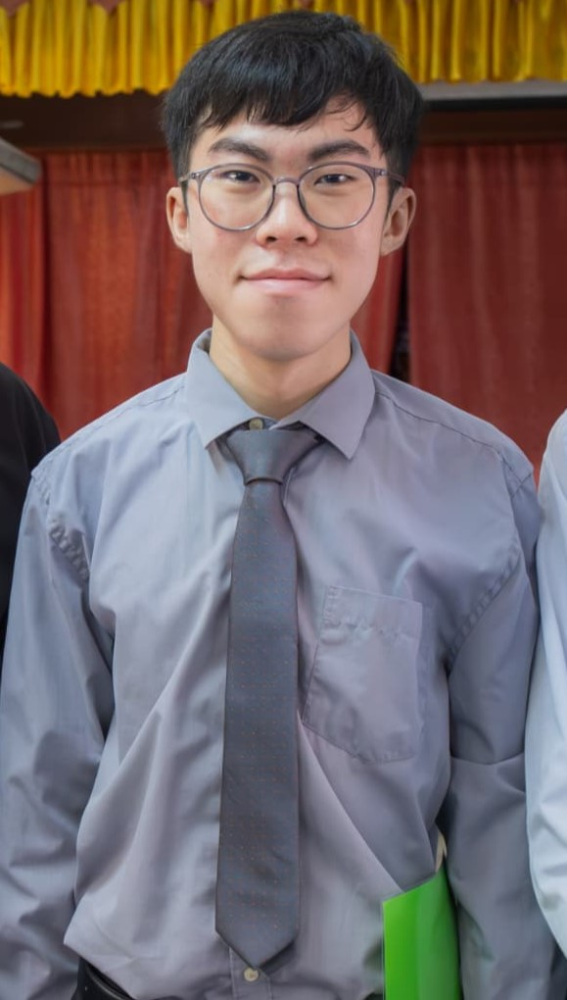
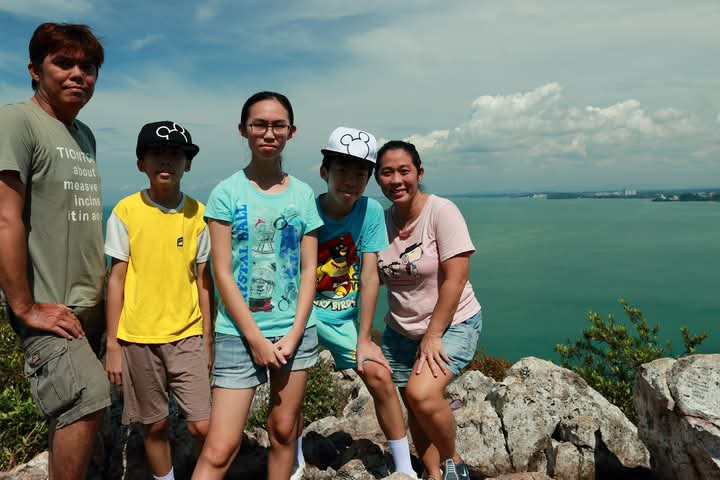
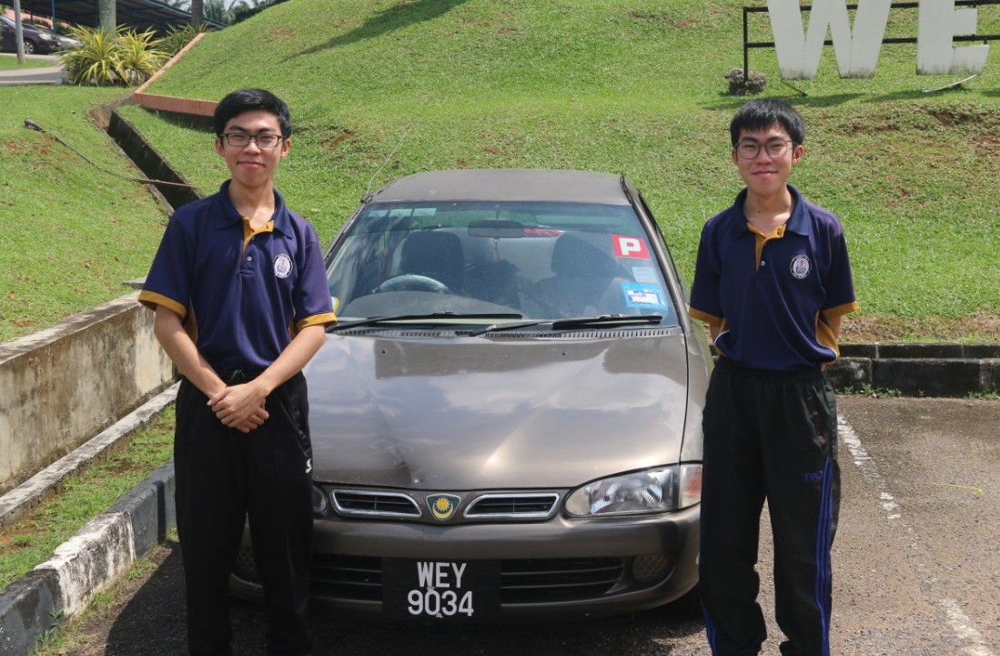

My name is Lai Yong Kang, a 22-year-old Malaysian currently living in Rantau, Negeri Sembilan. I was born on 16 January 2004 and come from a close and supportive family with my parents, an elder sister, and a twin elder brother.
I am passionate about gaming and interactive entertainment. I enjoy exploring different genres of games including action, RPG, strategy, horror, and open-world adventures. Some of my favourite games include DoTA 2, Counter-Strike 2, Elden Ring, Monster Hunter: World, GTA V, Red Dead Redemption 2, Devil May Cry, Resident Evil, Black Myth: Wukong, and Kingdom Come: Deliverance 2.
Family has always been an important part of my life. Growing up together with my siblings taught me the importance of teamwork, communication, and supporting each other.
Besides gaming, I also enjoy creating games and learning how interactive systems are designed. I love experimenting with gameplay mechanics, programming logic, and creative digital ideas that can provide immersive experiences for players.
Outside of technology and games, I enjoy playing ping pong. I started learning ping pong during primary school and had opportunities to represent my school in competitions.


Having a twin brother has been a unique and meaningful experience throughout my life. Even though we share many similarities, we also have our own personalities, interests, and goals.
Growing up together helped me become more adaptable, cooperative, and open-minded. We often share experiences, ideas, and challenges together, which has shaped my personal growth.